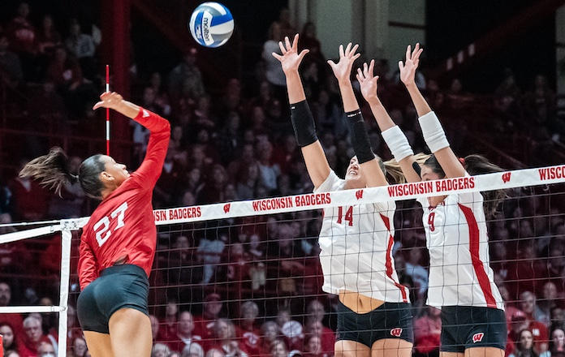
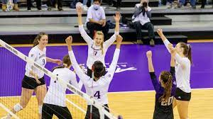

Volleyball is the sixth most popular sport in the world, with an estimated
900 million fans worldwide. It is particularly popular in countries such
as Brazil, Italy, and Russia.
Volleyball History
Volleyball is a team sport in which two teams of six players are separated
by a net. Each team tries to score points by grounding a ball on the other
team's court under organized rules.[1] It has been a part of the official
program of the Summer Olympic Games since Tokyo 1964. Beach volleyball was
introduced to the programme at the Atlanta 1996 Summer Olympics. The
adapted version of volleyball at the Summer Paralympic Games is sitting
volleyball. The complete set of rules is extensive,[2] but play
essentially proceeds as follows: a player on one of the teams begins a
'rally' by serving the ball (tossing or releasing it and then hitting it
with a hand or arm), from behind the back boundary line of the court, over
the net, and into the receiving team's court.[3] The receiving team must
not let the ball be grounded within their court. The team may touch the
ball up to three times to return the ball to the other side of the court,
but individual players may not touch the ball twice consecutively.[3]
Typically, the first two touches are used to set up for an attack. An
attack is an attempt to direct the ball back over the net in such a way
that the team receiving the ball is unable to pass the ball and continue
the rally, thus, losing the point. The team that wins the rally is awarded
a point and serves the ball to start the next rally. A few of the most
common faults include: causing the ball to touch the ground or floor
outside the opponents' court or without first passing over the net;
catching and throwing the ball; double hit: two consecutive contacts with
the ball made by the same player; four consecutive contacts with the ball
made by the same team; net foul: touching the net during play; foot fault:
the foot crosses over the boundary line when serving or under the net when
a front row player is trying to keep the ball in play. The ball is usually
played with the hands or arms, but players can legally strike or push
(short contact) the ball with any part of the body.[4] A number of
consistent techniques have evolved in volleyball, including spiking and
blocking (because these plays are made above the top of the net, the
vertical jump is an athletic skill emphasized in the sport) as well as
passing, setting, specialized player positions, and offensive and
defensive structures.[5]

